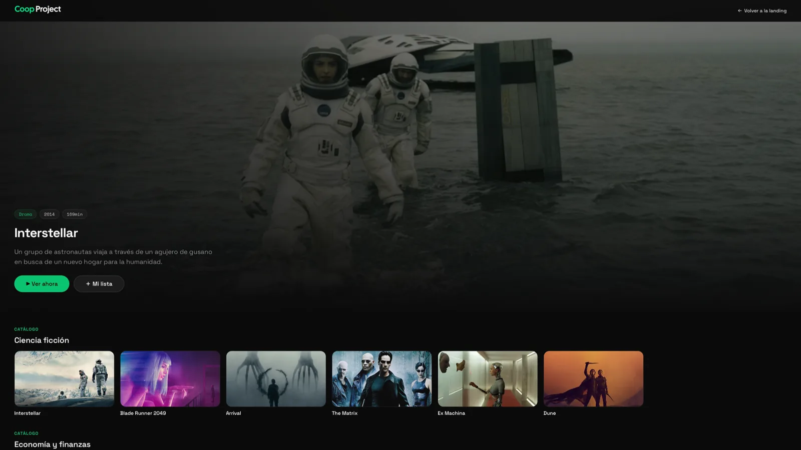
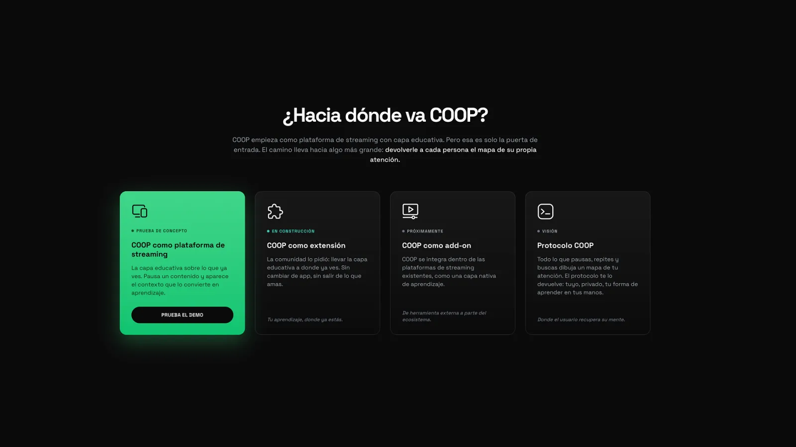
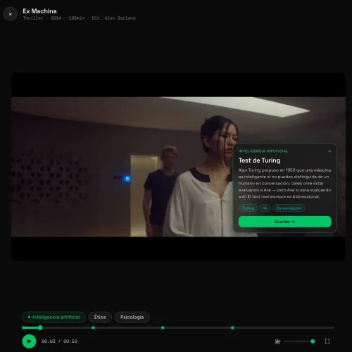
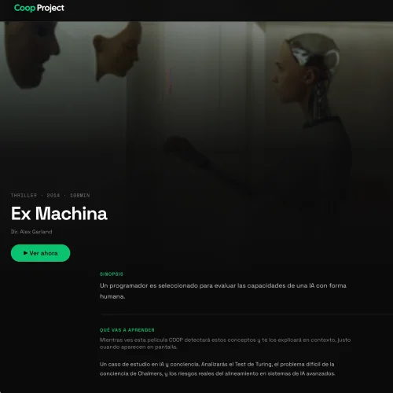
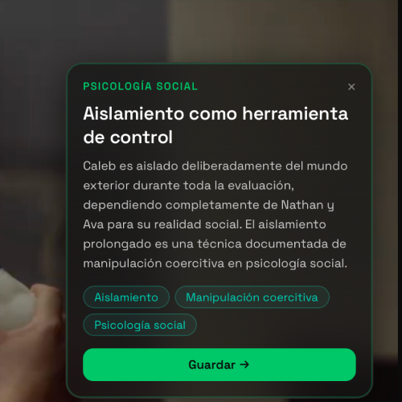
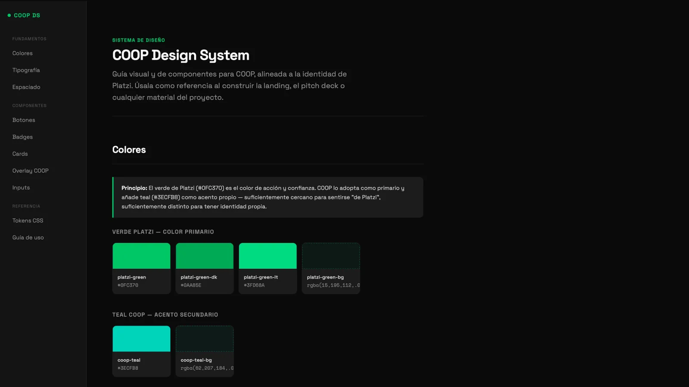
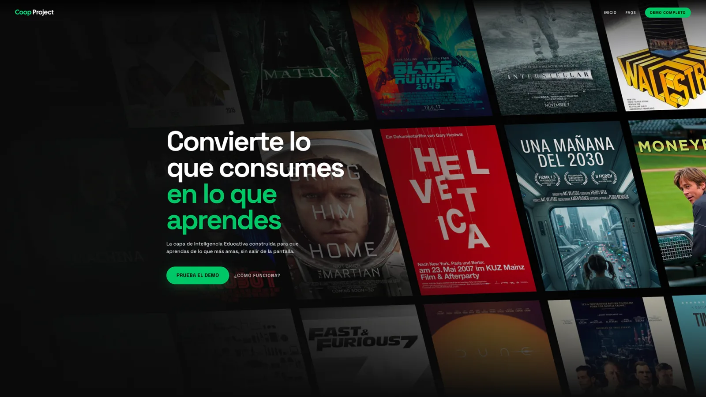

COOP
A streaming platform with a contextual educational layer, designed and built from scratch
Streaming platforms are built for consuming, not learning: you watch a documentary that moves you and scroll on, with no layer connecting that curiosity to something you could learn or do next.
As my own project I defined the vision, designed the experience, built the design system, and developed a working React demo: a contextual educational layer on top of streaming content.
A functional prototype with 18 films and its own identity, live at coop.rocks, that has drawn organic interest online and validates that the problem resonates.

The problem
Streaming platforms are built around consumption: watch, scroll, watch more. The content has depth, but the experience doesn't help you do anything with it. Documentaries about climate change, films about social issues, series exploring complex ideas. You watch them, feel something, and move on.
There's no layer that connects what you just watched to what you could learn, do, or understand next.
My role
COOP is my own project. I identified the problem, defined the product vision, designed the experience, built the design system, and developed a working demo in React. There's no client and no team. Every decision, from product strategy to code, is mine.
COOP adds a contextual educational layer on top of streaming content. When you watch a film or documentary, COOP surfaces relevant learning material: concepts, context, further reading, connected topics. The idea is simple: what if the moment you're most curious about something was also the moment you could start learning about it?
The product narrative follows a phased approach:
Phase 1 — Streaming platform with educational notes
A curated content library where each title comes with a contextual learning layer. This is the current focus.
Phase 2 — Browser extension
Bring the educational layer to where people already watch: YouTube. A Chrome extension that adds COOP's contextual notes to existing content without requiring users to switch platforms.
Phase 3 — Platform addon
Expand the layer to other streaming services, meeting users wherever they consume content.

Lead with education, not with catalog
Most streaming platforms compete on library size. COOP can't win that race and doesn't need to. The differentiator is the educational layer, so the product leads with it: every title is selected because it teaches something, and the learning material is as designed as the viewing experience.
Contextual cards, not courses
The educational content isn't a separate section you navigate to. It surfaces as contextual cards tied to specific moments or themes in what you're watching. The learning feels like a natural extension of the content, not homework after the movie.
Own visual identity from day one
COOP needed to feel like its own product, not a side project or a clone. I designed a complete visual identity and built a custom design system that carries through every screen.
This is a working product, not a Figma file.
React + Vite demo
A fully functional browsing experience with 18 films, custom components, and the design system implemented in code. Built to demonstrate that the concept works as a real product, not just as screens.



Custom design system
Typography, color, spacing, and component patterns defined and built as reusable code. The system was designed to scale: adding new content or new features follows established patterns without redesigning from scratch.

Landing page
A live site at coop.rocks that communicates the product vision and invites early interest.

The project has generated organic interest on social media. A public thread pitching COOP attracted engagement and conversations around the concept, validating that the problem resonates beyond my own perspective. Development continues.
COOP is the project where everything in my career converges. Product thinking from years of corporate design. The ability to build in code, not just hand off. A vision that I own completely, with no client filter.
I include it deliberately without user metrics or revenue: it's the only case where the only constraint is me, and that's why it best shows how I think about a product end to end, from the problem to the code. There's a clear vision, a working prototype, and the discipline to keep building it; I'll be adding metrics as the project keeps developing.